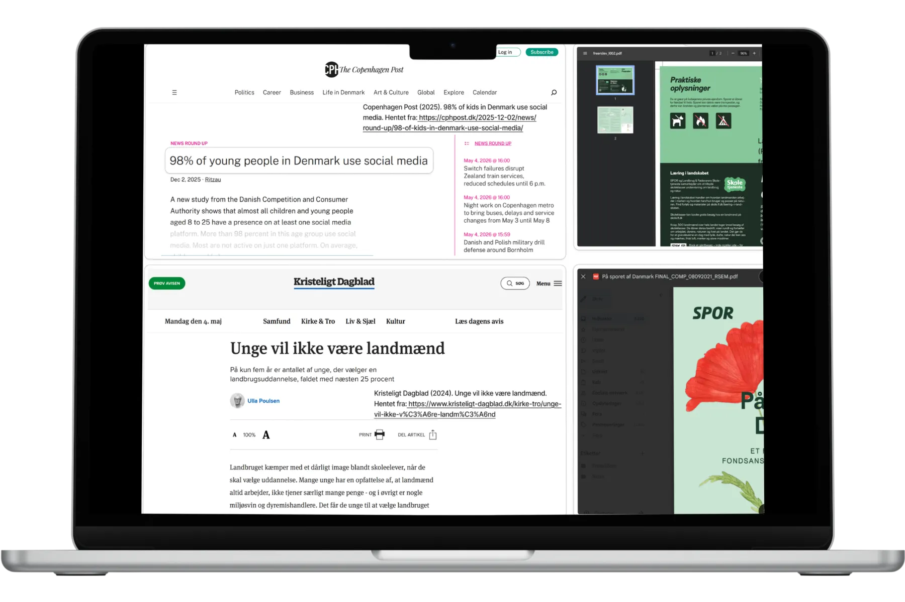
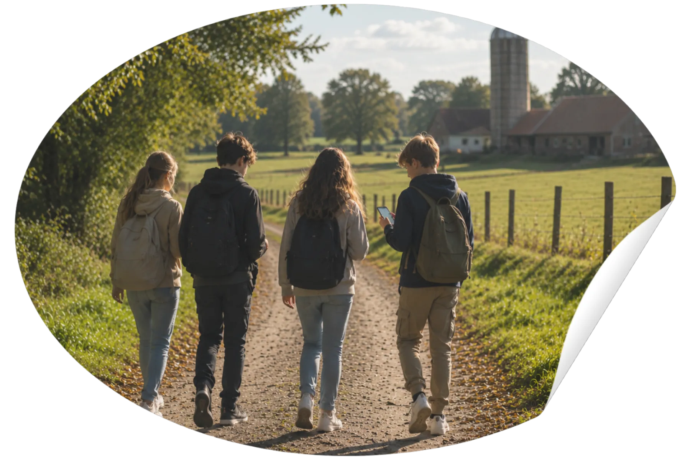
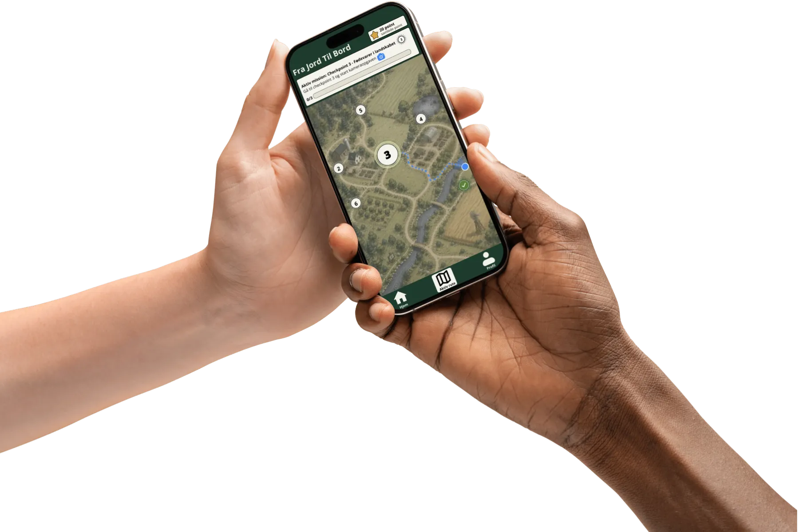

Om SPOR
Læring gennem bevægelse og oplevelser
SPOR er et app-koncept, der videreudvikler den eksisterende SPOR-platform med fokus på at gøre formidling om dansk landbrug mere interaktiv, engagerende og relevant for skoleelever.
Problemstilling
Fra passiv information til aktiv deltagelse
Den eksisterende digitale formidling om dansk landbrug er ofte baseret på statisk information, som brugeren selv skal opsøge. Det kan gøre det svært at engagere yngre målgrupper, der i høj grad er vant til visuelle og interaktive digitale oplevelser.

Målgruppe
Designet til elever på mellemtrinnet
Løsningen er målrettet skoleelever i 4.–6. klasse. Denne målgruppe befinder sig i et spænd mellem leg og læring, hvor aktivitet, visuel formidling og simple interaktioner kan være med til at skabe større engagement.

UX fokus
Enkel navigation og tydelige flows
Løsningen blev udviklet gennem research, idéudvikling, prototyper og iterative brugertests. Indsigter fra processen dannede grundlag for navigation og interaktioner, der er designet til at være intuitive, genkendelige og nemme at anvende under aktivitet og bevægelse.

Læring og gamification
Motivation gennem missioner, point og progression
Ved at kombinere missioner, quizzer, kameraopgaver og point bliver læringen gjort mere aktiv og oplevelsesbaseret. Eleverne får ikke blot information, men deltager i en oplevelse, hvor de selv undersøger, svarer og bevæger sig gennem landskabet.
Fra idé til prototype
Se hvordan konceptet er omsat til en digital løsning
SPOR app-konceptet er udviklet med udgangspunkt i research, målgruppeforståelse og en brugercentreret designproces.
Se prototype